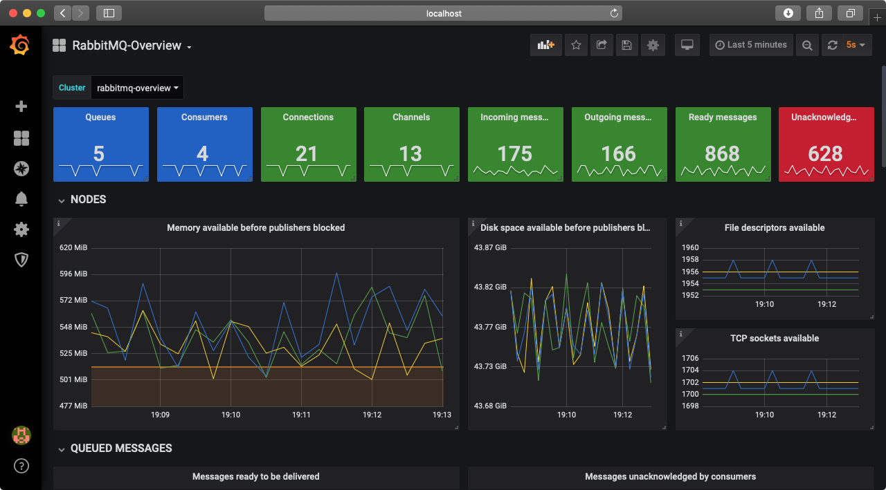
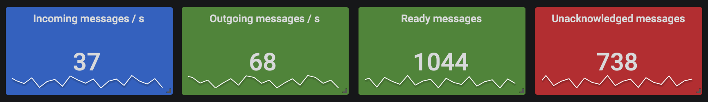
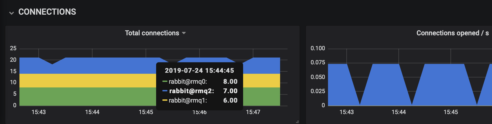
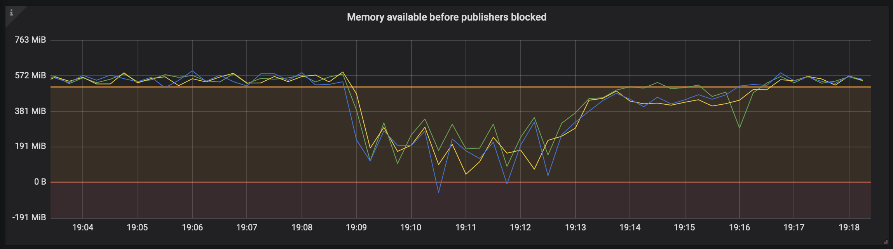
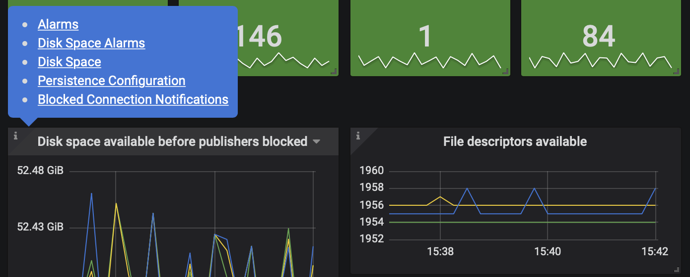
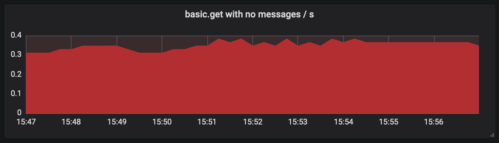
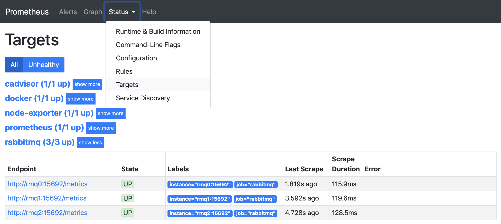
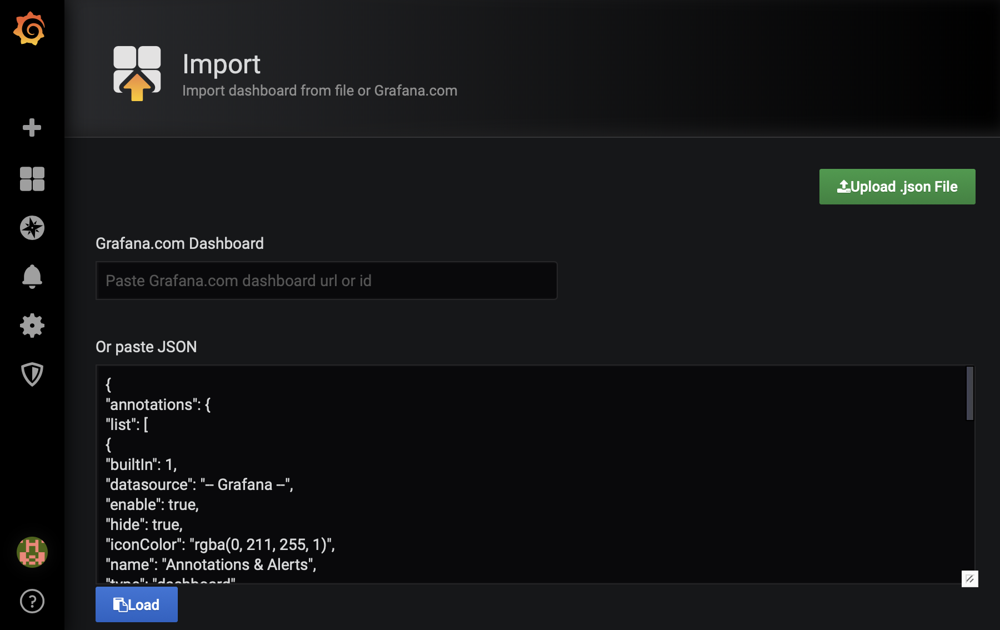

Monitoring with Prometheus & Grafana
Overview
This guide covers RabbitMQ monitoring with two popular tools: Prometheus, a monitoring toolkit; and Grafana, a metrics visualisation system.
These tools together form a powerful toolkit for long-term metric collection and monitoring of RabbitMQ clusters. While RabbitMQ management UI also provides access to a subset of metrics, it by design doesn't try to be a long term metric collection solution.
Please read through the main guide on monitoring first. Monitoring principles and available metrics are mostly relevant when Prometheus and Grafana are used.
Some key topics covered by this guide are
- Prometheus support basics
- Grafana support basics
- Quick Start for local experimentation
- Installation steps for production systems
- Two types of scraping endpoint responses: Aggregated vs. Individual Entity Metrics
Grafana dashboards follow a number of conventions to make the system more observable and anti-patterns easier to spot. Its design decisions are explained in a number of sections:
- RabbitMQ Overview Dashboard
- Health indicators on the Overview dashboard
- Graph colour labelling conventions
- Graph thresholds
- Relevant documentation for each graph (metric)
- Spotting Anti-patterns
- Other available dashboards
- TLS support for Prometheus scraping endpoint
Built-in Prometheus Support
RabbitMQ ships with built-in Prometheus & Grafana support.
Support for Prometheus metric collector ships in the rabbitmq_prometheus plugin. The plugin exposes all RabbitMQ metrics on a dedicated TCP port, in Prometheus text format.
These metrics provide deep insights into the state of RabbitMQ nodes and the runtime. They make reasoning about the behaviour of RabbitMQ, applications that use it and various infrastructure elements a lot more informed.
Grafana Support
Collected metrics are not very useful unless they are visualised. Team RabbitMQ provides a prebuilt set of Grafana dashboards that visualise a large number of available RabbitMQ and runtime metrics in context-specific ways.
There is a number of dashboards available:
- an overview dashboard
- runtime memory allocators dashboard
- an inter-node communication (Erlang distribution) dashboard
- a Raft metric dashboard
and others. Each is meant to provide an insight into a specific part of the system. When used together, they are able to explain RabbitMQ and application behaviour in detail.
Note that the Grafana dashboards are opinionated and use a number of conventions, for example, to spot system health issues quicker or make cross-graph referencing possible. Like all Grafana dashboards, they are also highly customizable. The conventions they assume are considered to be good practices and are thus recommended.
An Example
When RabbitMQ is integrated with Prometheus and Grafana, this is what the RabbitMQ Overview dashboard looks like:

Quick Start
Before We Start
This section explains how to set up a RabbitMQ cluster with Prometheus and Grafana dashboards, as well as some applications that will produce some activity and meaningful metrics.
With this setup you will be able to interact with RabbitMQ, Prometheus & Grafana running locally. You will also be able to try out different load profiles to see how it all fits together, make sense of the dashboards, panels and so on.
This is merely an example; the rabbitmq_prometheus plugin and our Grafana dashboards do not require the use of Docker Compose demonstrated below.
Prerequisites
The instructions below assume a host machine that has a certain set of tools installed:
- A terminal to run the commands
- Git to clone the repository
- Docker Desktop to use Docker Compose locally
- A Web browser to browse the dashboards
Their installation is out of scope of this guide. Use
git version
docker info && docker-compose version
on the command line to verify that the necessary tools are available.
Clone a Repository with Manifests
First step is to clone a Git repository, rabbitmq-server, with the manifests and other components required to run a RabbitMQ cluster, Prometheus and a set of applications:
git clone https://github.com/rabbitmq/rabbitmq-server.git cd rabbitmq-server/deps/rabbitmq_prometheus/docker
Run Docker Compose
Next use Docker Compose manifests to run a pre-configured RabbitMQ cluster, a Prometheus instance and a basic workload that will produce the metrics displayed in the RabbitMQ overview dashboard:
docker-compose -f docker-compose-metrics.yml up -d docker-compose -f docker-compose-overview.yml up -d
The docker-compose commands above can also be executed with a make target:
make metrics overview
When the above commands succeed, there will be a functional RabbitMQ cluster and a Prometheus instance collecting metrics from it running in a set of containers.
Access RabbitMQ Overview Grafana Dashboard
Now navigate to http://localhost:3000/dashboards in a Web browser. It will bring up a login page. Use admin for both the username and the password. On the very first login Grafana will suggest changing your password. For the sake of this example, we suggest that this step is skipped.
Navigate to the RabbitMQ-Overview dashboard that will look like this:

Congratulations! You now have a 3-nodes RabbitMQ cluster integrated with Prometheus & Grafana running locally. This is a perfect time to learn more about the available dashboards.
RabbitMQ Overview Dashboard
All metrics available in the management UI Overview page are available in the Overview Grafana dashboard. They are grouped by object type, with a focus on RabbitMQ nodes and message rates.
Health Indicators
Single stat metrics at the top of the dashboard capture the health of a single RabbitMQ cluster. In this case, there's a single RabbitMQ cluster, rabbitmq-overview, as seen in the Cluster drop-down menu just below the dashboard title.
The panels on all RabbitMQ Grafana dashboards use different colours to capture the following metric states:
- Green means the value of the metric is within a healthy range
- Blue means under-utilisation or some form of degradation
- Red means the value of the metric is below or above the range that is considered healthy

Default ranges for the single stat metrics will not be optimal for all RabbitMQ deployments. For example, in environments with many consumers and/or high prefetch values, it may be perfectly fine to have over 1,000 unacknowledged messages. The default thresholds can be easily adjusted to suit the workload and system at hand. The users are encouraged to revisit these ranges and tweak them as they see fit for their workloads, monitoring and operational practices, and tolerance for false positives.
Metrics and Graphs
Most RabbitMQ and runtime metrics are represented as graphs in Grafana: they are values that change over time. This is the simplest and clearest way of visualising how some aspect of the system changes. Time-based charting makes it easy to understand the change in key metrics: message rates, memory used by every node in the cluster, or the number of concurrent connections. All metrics except for health indicators are node-specific, that is, they represent values of a metric on a single node.
Some metrics, such as the panels grouped under CONNECTIONS, are stacked to capture the state of the cluster as a whole. These metrics are collected on individual nodes and grouped visually, which makes it easy to notice when, for example, one node serves a disproportionate number of connections.
We would refer to such a RabbitMQ cluster as unbalanced, meaning that at least in some ways, a minority of nodes perform the majority of work.
In the example below, connections are spread out evenly across all nodes most of the time:

Colour Labelling in Graphs
All metrics on all graphs are associated with specific node names. For example, all metrics drawn in green are for the node that contains 0 in its name, e.g. rabbit@rmq0. This makes it easy to correlate metrics of a specific node across graphs. Metrics for the first node, which is assumed to contain 0 in its name, will always appear as green across all graphs.
It is important to remember this aspect when using the RabbitMQ Overview dashboard. If a different node naming convention is used, the colours will appear inconsistent across graphs: green may represent e.g. rabbit@foo in one graph, and e.g. rabbit@bar in another graph.
When this is the case, the panels must be updated to use a different node naming scheme.
Thresholds in Graphs
Most metrics have pre-configured thresholds. They define expected operating boundaries for the metric. On the graphs they appear as semi-transparent orange or red areas, as seen in the example below.

Metric values in the orange area signal that some pre-defined threshold has been exceeded. This may be acceptable, especially if the metric recovers. A metric that comes close to the orange area is considered to be in healthy state.
Metric values in the red area need attention and may identify some form of service degradation. For example, metrics in the red area can indicate that an alarm in effect or when the node is out of file descriptors and cannot accept any more connections or open new files.
In the example above, we have a RabbitMQ cluster that runs at optimal memory capacity, which is just above the warning threshold. If there is a spike in published messages that should be stored in RAM, the amount of memory used by the node go up and the metric on the graph will go down (as it indicates the amount of available memory).
Because the system has more memory available than is allocated to the RabbitMQ node it hosts, we notice the dip below 0 B. This emphasizes the importance of leaving spare memory available for the OS, housekeeping tasks that cause short-lived memory usage spikes, and other processes. When a RabbitMQ node exhausts all memory that it is allowed to use, a memory alarm is triggered and publishers across the entire cluster will be blocked.
On the right side of the graph we can see that consumers catch up and the amount of memory used goes down. That clears the memory alarm on the node and, as a result, publishers become unblocked. This and related metrics across cluster then should return to their optimal state.
There is No "Right" Threshold for Many Metrics
Note that the thresholds used by the Grafana dashboards have to have a default value. No matter what value is picked by dashboard developers, they will not be suitable for all environments and workloads.
Some workloads may require higher thresholds, others may choose to lower them. While the defaults should be adequate in many cases, the operator must review and adjust the thresholds to suit their specific requirements.
Relevant Documentation for Graphs
Most metrics have a help icon in the top-left corner of the panel.

Some, like the available disk space metric, link to dedicated pages in RabbitMQ documentation. These pages contain information relevant to the metric. Getting familiar with the linked guides is highly recommended and will help the operator understand what the metric means better.
Using Graphs to Spot Anti-patterns
Any metric drawn in red hints at an anti-pattern in the system. Such graphs try to highlight sub-optimal uses of RabbitMQ. A red graphs with non-zero metrics should be investigated. Such metrics might indicate an issue in RabbitMQ configuration or sub-optimal actions by clients (publishers or consumers).
In the example below we can see the usage of greatly inefficient polling consumers that keep polling, even though most or even all polling operation return no messages. Like any polling-based algorithm, it is wasteful and should be avoided where possible.
It is a lot more and efficient to have RabbitMQ push messages to the consumer.

Example Workloads
The Prometheus plugin repository contains example workloads that use PerfTest to simulate different workloads. Their goal is to exercise all metrics in the RabbitMQ Overview dashboard. These examples are meant to be edited and extended as developers and operators see fit when exploring various metrics, their thresholds and behaviour.
To deploy a workload app, run docker-compose -f docker-compose-overview.yml up -d. The same command will redeploy the app after the file has been updated.
To delete all workload containers, run docker-compose -f docker-compose-overview.yml down or
gmake down
More Dashboards: Raft and Erlang Runtime
There are two more Grafana dashboards available: RabbitMQ-Raft and Erlang-Distribution. They collect and visualise metrics related to the Raft consensus algorithm (used by Quorum Queues and other features) as well as more nitty-gritty runtime metrics such as inter-node communication buffers.
The dashboards have corresponding RabbitMQ clusters and PerfTest instances which are started and stopped the same as the Overview one. Feel free to experiment with the other workloads that are included in the same docker directory.
For example, the docker-compose-dist-tls.yml Compose manifest is meant to stress the inter-node communication links. This workload uses a lot of system resources. docker-compose-qq.yml contains a quorum queue workload.
To stop and delete all containers used by the workloads, run docker-compose -f [file] down or
make down
Installation
Unlike the Quick Start above, this section covers monitoring setup geared towards production usage.
We will assume that the following tools are provisioned and running:
- A 3-node RabbitMQ 3.11 cluster
- Prometheus, including network connectivity with all RabbitMQ cluster nodes
- Grafana, including configuration that lists the above Prometheus instance as one of the data sources
RabbitMQ Configuration
Cluster Name
First step is to give the RabbitMQ cluster a descriptive name so that it can be distinguished from other clusters.
To find the current name of the cluster, use
rabbitmq-diagnostics -q cluster_status
This command can be executed against any cluster node. If the current cluster name is distinctive and appropriate, skip the rest of this paragraph. To change the name of the cluster, run the following command (the name used here is just an example):
rabbitmqctl -q set_cluster_name testing-prometheus
Enable rabbitmq_prometheus
Next, enable the rabbitmq_prometheus plugin on all nodes:
rabbitmq-plugins enable rabbitmq_prometheus
The output will look similar to this:
rabbitmq-plugins enable rabbitmq_prometheus Enabling plugins on node rabbit@ed9618ea17c9: rabbitmq_prometheus The following plugins have been configured: rabbitmq_management_agent rabbitmq_prometheus rabbitmq_web_dispatch Applying plugin configuration to rabbit@ed9618ea17c9... The following plugins have been enabled: rabbitmq_management_agent rabbitmq_prometheus rabbitmq_web_dispatch started 3 plugins.
To confirm that RabbitMQ now exposes metrics in Prometheus format, get the first couple of lines with curl or similar:
curl -s localhost:15692/metrics | head -n 3
# TYPE erlang_mnesia_held_locks gauge
# HELP erlang_mnesia_held_locks Number of held locks.
erlang_mnesia_held_locks{node="rabbit@65f1a10aaffa",cluster="rabbit@65f1a10aaffa"} 0
Notice that RabbitMQ exposes the metrics on a dedicated TCP port, 15692 by default.
Prometheus Configuration
Once RabbitMQ is configured to expose metrics to Prometheus, Prometheus should be made aware of where it should scrape RabbitMQ metrics from. There are a number of ways of doing this. Please refer to the official Prometheus configuration documentation. There's also a first steps with Prometheus guide for beginners.
Metric Collection and Scraping Intervals
Prometheus will periodically scrape (read) metrics from the systems it monitors, every 60 seconds by default. RabbitMQ metrics are updated periodically, too, every 5 seconds by default. Since this value is configurable, check the metrics update interval by running the following command on any of the nodes:
rabbitmq-diagnostics environment | grep collect_statistics_interval
# => {collect_statistics_interval,5000}
The returned value will be in milliseconds.
For production systems, we recommend a minimum value of 15s for Prometheus scrape interval and a 10000 (10s) value for RabbitMQ's collect_statistics_interval. With these values, Prometheus doesn't scrape RabbitMQ too frequently, and RabbitMQ doesn't update metrics unnecessarily. If you configure a different value for Prometheus scrape interval, remember to set an appropriate interval when visualising metrics in Grafana with rate() - 4x the scrape interval is considered safe.
When using RabbitMQ's Management UI default 5 second auto-refresh, keeping the default collect_statistics_interval setting is optimal. Both intervals are 5000 ms (5 seconds) by default for this reason.
To confirm that Prometheus is scraping RabbitMQ metrics from all nodes, ensure that all RabbitMQ endpoints are Up on the Prometheus Targets page, as shown below:

Network Interface and Port
The port is configured using the prometheus.tcp.port key:
prometheus.tcp.port = 15692
It is possible to configure what interface the Prometheus plugin API endpoint will use, similarly to messaging protocol listeners, using the prometheus.tcp.ip key:
prometheus.tcp.ip = 0.0.0.0
To check what interface and port is used by a running node, use rabbitmq-diagnostics:
rabbitmq-diagnostics -s listeners # => Interface: [::], port: 15692, protocol: http/prometheus, purpose: Prometheus exporter API over HTTP
or tools such as lsof, ss or netstat.
Aggregated and Per-Object Metrics
RabbitMQ can return Prometheus metrics in two modes:
- Aggregated: metrics are aggregated by name. This mode has lower performance overhead with the output size constant, even as the number of objects (e.g. connections and queues) grows.
- Per-object: individual metric for each object-metric pair. With a large number of stats-emitting entities, e.g. a lot of connections and queues, this can result in very large payloads and a lot of CPU resources spent serialising data to output.
Metric aggregation is a more predictable and practical option for larger deployments. It scales very well with respect to the number of metric-emitting objects in the system (connections, channels, queues, consumers, etc) by keeping response size and time small. It is also predictably easy to visualise.
The downside of metric aggregation is that it loses data fidelity. Per-object metrics and alerting are not possible with aggregation. Individual object metrics, while very useful in some cases, are also hard to visualise. Consider what a chart with 200K connections charted on it would look like and whether an operator would be able to make sense of it.
Prometheus endpoints: /metrics
By default, Prometheus (and other Prometheus-compatible solutions), expects metrics to be available on a path of /metrics. RabbitMQ returns aggregated metrics on this endpoint by default.
If you prefer to return per-object (unaggregated) metrics on the /metrics endpoint, set prometheus.return_per_object_metrics to true:
# can result in a really excessive output produced, # only suitable for environments with a relatively small # number of metrics-emitting objects such as connections and queues prometheus.return_per_object_metrics = true
Prometheus endpoints: /metrics/per-object
RabbitMQ offers a dedicated endpoint
GET /metrics/per-object
which always returns per-object metrics, regardless of the value of prometheus.return_per_object_metrics. You can therefore keep the default value of prometheus.return_per_object_metrics, which is false, and still scrape per-object metrics when necessary, by setting metrics_path = /metrics/per-object in the Prometheus target configuration (check Prometheus Documentation for additional information).
Prometheus endpoints: /metrics/detailed
As mentioned earlier, using per-object metrics in environments with a lot of entitites is very computationally expensive. For example, /metrics/per-object returns all metrics for all entities in the system, even if many of them are not used by most clients (such as monitoring tools).
This is why there is a separate endpoint for per-object metrics that allows the caller to query only the metrics they need:
GET /metrics/detailed
By default it does not return any metrics. All required metric groups and virtual host filters must be be provided as query parameters. For example,
GET /metrics/detailed?vhost=vhost-1&vhost=vhost-2&family=queue_coarse_metrics&family=queue_consumer_count
will only return requested metrics and leave out, for example, all channel metrics that this client is not interested in.
This endpoint supports the following parameters:
- Zero or more family values. Only the requested metric families will be returned. The full list is documented below;
- Zero or more vhosts: if provided, queue related metrics (queue_coarse_metrics, queue_consumer_count and queue_metrics) will be returned only for the queues in the provided virtual hosts
The returned metrics use a different prefix: rabbitmq_detailed_ (instead of rabbitmq_ used by other endpoints). This means the endpoint can be used together with GET /metrics and tools that rely on other endpoints won't be affected.
Since it queries and serves less data in almost all cases, this endpoint puts less load on the system. For example,
GET /metrics/detailed?family=queue_coarse_metrics&family=queue_consumer_count
provides just enough metrics to determine how many messages are enqueued and how many consumers those queues have. In some environments this query is up to 60 times more efficient than querying GET /metrics/per-object to get only a couple of metrics from the response.
Generic metrics
These are some generic metrics, which do not refer to any specific queue/connection/etc.
Connection/channel/queue churn
Grouped under connection_churn_metrics:
| Metric | Description |
|---|---|
| rabbitmq_detailed_connections_opened_total | Total number of connections opened |
| rabbitmq_detailed_connections_closed_total | Total number of connections closed or terminated |
| rabbitmq_detailed_channels_opened_total | Total number of channels opened |
| rabbitmq_detailed_channels_closed_total | Total number of channels closed |
| rabbitmq_detailed_queues_declared_total | Total number of queues declared |
| rabbitmq_detailed_queues_created_total | Total number of queues created |
| rabbitmq_detailed_queues_deleted_total | Total number of queues deleted |
Erlang VM/Disk IO via RabbitMQ
Grouped under node_coarse_metrics:
| Metric | Description |
|---|---|
| rabbitmq_detailed_process_open_fds | Open file descriptors |
| rabbitmq_detailed_process_open_tcp_sockets | Open TCP sockets |
| rabbitmq_detailed_process_resident_memory_bytes | Memory used in bytes |
| rabbitmq_detailed_disk_space_available_bytes | Disk space available in bytes |
| rabbitmq_detailed_erlang_processes_used | Erlang processes used |
| rabbitmq_detailed_erlang_gc_runs_total | Total number of Erlang garbage collector runs |
| rabbitmq_detailed_erlang_gc_reclaimed_bytes_total | Total number of bytes of memory reclaimed by Erlang garbage collector |
| rabbitmq_detailed_erlang_scheduler_context_switches_total | Total number of Erlang scheduler context switches |
Grouped under node_metrics:
| Metric | Description |
|---|---|
| rabbitmq_detailed_process_max_fds | Open file descriptors limit |
| rabbitmq_detailed_process_max_tcp_sockets | Open TCP sockets limit |
| rabbitmq_detailed_resident_memory_limit_bytes | Memory high watermark in bytes |
| rabbitmq_detailed_disk_space_available_limit_bytes | Free disk space low watermark in bytes |
| rabbitmq_detailed_erlang_processes_limit | Erlang processes limit |
| rabbitmq_detailed_erlang_scheduler_run_queue | Erlang scheduler run queue |
| rabbitmq_detailed_erlang_net_ticktime_seconds | Inter-node heartbeat interval |
| rabbitmq_detailed_erlang_uptime_seconds | Node uptime |
Grouped under node_persister_metrics:
| Metric | Description |
|---|---|
| rabbitmq_detailed_io_read_ops_total | Total number of I/O read operations |
| rabbitmq_detailed_io_read_bytes_total | Total number of I/O bytes read |
| rabbitmq_detailed_io_write_ops_total | Total number of I/O write operations |
| rabbitmq_detailed_io_write_bytes_total | Total number of I/O bytes written |
| rabbitmq_detailed_io_sync_ops_total | Total number of I/O sync operations |
| rabbitmq_detailed_io_seek_ops_total | Total number of I/O seek operations |
| rabbitmq_detailed_io_reopen_ops_total | Total number of times files have been reopened |
| rabbitmq_detailed_schema_db_ram_tx_total | Total number of Schema DB memory transactions |
| rabbitmq_detailed_schema_db_disk_tx_total | Total number of Schema DB disk transactions |
| rabbitmq_detailed_msg_store_read_total | Total number of Message Store read operations |
| rabbitmq_detailed_msg_store_write_total | Total number of Message Store write operations |
| rabbitmq_detailed_queue_index_read_ops_total | Total number of Queue Index read operations |
| rabbitmq_detailed_queue_index_write_ops_total | Total number of Queue Index write operations |
| rabbitmq_detailed_io_read_time_seconds_total | Total I/O read time |
| rabbitmq_detailed_io_write_time_seconds_total | Total I/O write time |
| rabbitmq_detailed_io_sync_time_seconds_total | Total I/O sync time |
| rabbitmq_detailed_io_seek_time_seconds_total | Total I/O seek time |
Raft-related (Quorum queues, streams) metrics
Grouped under ra_metrics:
| Metric | Description |
|---|---|
| rabbitmq_detailed_raft_term_total | Current Raft term number |
| rabbitmq_detailed_raft_log_snapshot_index | Raft log snapshot index |
| rabbitmq_detailed_raft_log_last_applied_index | Raft log last applied index |
| rabbitmq_detailed_raft_log_commit_index | Raft log commit index |
| rabbitmq_detailed_raft_log_last_written_index | Raft log last written index |
| rabbitmq_detailed_raft_entry_commit_latency_seconds | Time taken for a log entry to be committed |
Auth metrics
Grouped under auth_attempt_metrics:
| Metric | Description |
|---|---|
| rabbitmq_detailed_auth_attempts_total | Total number of authorization attempts |
| rabbitmq_detailed_auth_attempts_succeeded_total | Total number of successful authentication attempts |
| rabbitmq_detailed_auth_attempts_failed_total | Total number of failed authentication attempts |
Grouped under auth_attempt_detailed_metrics. When aggregated, these add up to the same numbers as auth_attempt_metrics.
| Metric | Description |
|---|---|
| rabbitmq_detailed_auth_attempts_detailed_total | Total number of authorization attempts with source info |
| rabbitmq_detailed_auth_attempts_detailed_succeeded_total | Total number of successful authorization attempts with source info |
| rabbitmq_detailed_auth_attempts_detailed_failed_total | Total number of failed authorization attempts with source info |
Queue metrics
Each metric in this group points to a single queue via its label. So the size of the response here is directly proportional to the number of queues hosted on the node.
The metrics below are listed from the least expensive to collect to the most expensive.
Queue coarse metrics
Grouped under queue_coarse_metrics:
| Metric | Description |
|---|---|
| rabbitmq_detailed_queue_messages_ready | Messages ready to be delivered to consumers |
| rabbitmq_detailed_queue_messages_unacked | Messages delivered to consumers but not yet acknowledged |
| rabbitmq_detailed_queue_messages | Sum of ready and unacknowledged messages - total queue depth |
| rabbitmq_detailed_queue_process_reductions_total | Total number of queue process reductions |
Per-queue consumer count
Grouped under queue_consumer_count. This is a subset of queue_metrics which is skipped if queue_metrics are requested:
| Metric | Description |
|---|---|
| rabbitmq_detailed_queue_consumers | Consumers on a queue |
This metric is useful for quickly detecting issues with consumers (e.g. when there are no consumers online). This is why it is exposed separately.
Detailed queue metrics
Grouped under queue_metrics. This group contains all the metrics for every queue, and can be relatively expensive to produce:
| Metric | Description |
|---|---|
| rabbitmq_detailed_queue_consumers | Consumers on a queue |
| rabbitmq_detailed_queue_consumer_capacity | Consumer capacity |
| rabbitmq_detailed_queue_consumer_utilisation | Same as consumer capacity |
| rabbitmq_detailed_queue_process_memory_bytes | Memory in bytes used by the Erlang queue process |
| rabbitmq_detailed_queue_messages_ram | Ready and unacknowledged messages stored in memory |
| rabbitmq_detailed_queue_messages_ram_bytes | Size of ready and unacknowledged messages stored in memory |
| rabbitmq_detailed_queue_messages_ready_ram | Ready messages stored in memory |
| rabbitmq_detailed_queue_messages_unacked_ram | Unacknowledged messages stored in memory |
| rabbitmq_detailed_queue_messages_persistent | Persistent messages |
| rabbitmq_detailed_queue_messages_persistent_bytes | Size in bytes of persistent messages |
| rabbitmq_detailed_queue_messages_bytes | Size in bytes of ready and unacknowledged messages |
| rabbitmq_detailed_queue_messages_ready_bytes | Size in bytes of ready messages |
| rabbitmq_detailed_queue_messages_unacked_bytes | Size in bytes of all unacknowledged messages |
| rabbitmq_detailed_queue_messages_paged_out | Messages paged out to disk |
| rabbitmq_detailed_queue_messages_paged_out_bytes | Size in bytes of messages paged out to disk |
| rabbitmq_detailed_queue_head_message_timestamp | Timestamp of the first message in the queue, if any |
| rabbitmq_detailed_queue_disk_reads_total | Total number of times queue read messages from disk |
| rabbitmq_detailed_queue_disk_writes_total | Total number of times queue wrote messages to disk |
Connection/channel metrics
All of those include the Erlang process ID of the channel in their label. This data is not particularly useful and is only present to distinguish metrics of separate channels.
These metrics are the most expensive to produce.
Connection metrics
Grouped under connection_coarse_metrics:
| Metric | Description |
|---|---|
| rabbitmq_detailed_connection_incoming_bytes_total | Total number of bytes received on a connection |
| rabbitmq_detailed_connection_outgoing_bytes_total | Total number of bytes sent on a connection |
| rabbitmq_detailed_connection_process_reductions_total | Total number of connection process reductions |
Grouped under connection_metrics:
| Metric | Description |
|---|---|
| rabbitmq_detailed_connection_incoming_packets_total | Total number of packets received on a connection |
| rabbitmq_detailed_connection_outgoing_packets_total | Total number of packets sent on a connection |
| rabbitmq_detailed_connection_pending_packets | Number of packets waiting to be sent on a connection |
| rabbitmq_detailed_connection_channels | Channels on a connection |
General channel metrics
Grouped under channel_metrics:
| Metric | Description |
|---|---|
| rabbitmq_detailed_channel_consumers | Consumers on a channel |
| rabbitmq_detailed_channel_messages_unacked | Delivered but not yet acknowledged messages |
| rabbitmq_detailed_channel_messages_unconfirmed | Published but not yet confirmed messages |
| rabbitmq_detailed_channel_messages_uncommitted | Messages received in a transaction but not yet committed |
| rabbitmq_detailed_channel_acks_uncommitted | Message acknowledgements in a transaction not yet committed |
| rabbitmq_detailed_consumer_prefetch | Limit of unacknowledged messages for each consumer |
| rabbitmq_detailed_channel_prefetch | Total limit of unacknowledged messages for all consumers on a channel |
Grouped under channel_process_metrics:
| Metric | Description |
|---|---|
| rabbitmq_detailed_channel_process_reductions_total | Total number of channel process reductions |
Channel metrics with queue/exchange breakdowns
Grouped under channel_exchange_metrics:
| Metric | Description |
|---|---|
| rabbitmq_detailed_channel_messages_published_total | Total number of messages published into an exchange on a channel |
| rabbitmq_detailed_channel_messages_confirmed_total | Total number of messages published into an exchange and confirmed on the channel |
| rabbitmq_detailed_channel_messages_unroutable_returned_total | Total number of messages published as mandatory into an exchange and returned to the publisher as unroutable |
| rabbitmq_detailed_channel_messages_unroutable_dropped_total | Total number of messages published as non-mandatory into an exchange and dropped as unroutable |
Grouped under channel_queue_metrics:
| Metric | Description |
|---|---|
| rabbitmq_detailed_channel_get_ack_total | Total number of messages fetched with basic.get in manual acknowledgement mode |
| rabbitmq_detailed_channel_get_total | Total number of messages fetched with basic.get in automatic acknowledgement mode |
| rabbitmq_detailed_channel_messages_delivered_ack_total | Total number of messages delivered to consumers in manual acknowledgement mode |
| rabbitmq_detailed_channel_messages_delivered_total | Total number of messages delivered to consumers in automatic acknowledgement mode |
| rabbitmq_detailed_channel_messages_redelivered_total | Total number of messages redelivered to consumers |
| rabbitmq_detailed_channel_messages_acked_total | Total number of messages acknowledged by consumers |
| rabbitmq_detailed_channel_get_empty_total | Total number of times basic.get operations fetched no message |
Grouped under channel_queue_exchange_metrics:
| Metric | Description |
|---|---|
| rabbitmq_detailed_queue_messages_published_total | Total number of messages published to queues |
Virtual hosts and exchange metrics
These additional metrics can be useful when virtual hosts or exchanges are created in a shared cluster. These metrics are cluster-wide and not node-local. Therefore these metrics must not be aggregated across cluster nodes.
Grouped under vhost_status:
| Metric | Description |
|---|---|
| rabbitmq_cluster_vhost_status | Whether a given vhost is running |
Grouped under exchange_names:
| Metric | Description |
|---|---|
| rabbitmq_cluster_exchange_name | Enumerates exchanges without any additional info. This value is cluster-wide. A cheaper alternative to exchange_bindings |
Grouped under exchange_bindings:
| Metric | Description |
|---|---|
| rabbitmq_cluster_exchange_bindings | Number of bindings for an exchange. This value is cluster-wide. |
Scraping Endpoint Timeouts
In some environments there aren't many stats-emitting entities (queues, connections, channels), in others the scraping HTTP endpoint may have to return a sizeable data set to the client (e.g. many thousands of rows). In those cases the amount of time it takes to process the request can exceed certain timeouts in the embedded HTTP server and the HTTP client used by Prometheus.
It is possible to bump plugin side HTTP request timeouts using the prometheus.tcp.idle_timeout, prometheus.tcp.inactivity_timeout, prometheus.tcp.request_timeout settings.
- prometheus.tcp.inactivity_timeout controls HTTP(S) client's TCP connection inactivity timeout. When it is reached, the connection will be closed by the HTTP server.
- prometheus.tcp.request_timeout controls the window of time in which the client has to send an HTTP request.
- prometheus.tcp.idle_timeout controls the window of time in which the client has to send more data (if any) within the context of an HTTP request.
If a load balancer or proxy is used between the Prometheus node and the RabbitMQ nodes it scrapes, the inactivity_timeout and idle_timeout values should be at least as large, and often greater than, the timeout and inactivity values used by the load balancer.
Here is an example configuration snippet that modifies the timeouts:
prometheus.tcp.idle_timeout = 120000 prometheus.tcp.inactivity_timeout = 120000 prometheus.tcp.request_timeout = 120000
Grafana Configuration
The last component in this setup is Grafana. If this is your first time integrating Grafana with Prometheus, please follow the official integration guide.
After Grafana is integrated with the Prometheus instance that reads and stores RabbitMQ metrics, it is time to import the Grafana dashboards that Team RabbitMQ maintains. Please refer to the the official Grafana tutorial on importing dashboards in Grafana.
Grafana dashboards for RabbitMQ and Erlang are open source and publicly from the rabbitmq-server GitHub repository.
To import RabbitMQ-Overview dashboard to Grafana:
- Go to the Grafana website to view the list of official RabbitMQ Grafana dashboards.
- Select RabbitMQ-Overview dashboard.
- Click the Download JSON link or copy the dashboard ID.
- Copy paste the file contents in Grafana, then click Load, as seen below:
- Alternatively, paste the dashboard ID in the field Grafana.com Dashboard.

Repeat the process for all other Grafana dashboards that you would like to use with this RabbitMQ deployment.
Finally, switch the default data source used by Grafana to prometheus.
Congratulations! Your RabbitMQ is now monitored with Prometheus & Grafana!
Securing Prometheus Scraping Endpoint with TLS
The Prometheus metrics can be secured with TLS similar to the other listeners. For example, in the configuration file
prometheus.ssl.port = 15691 prometheus.ssl.cacertfile = /full/path/to/ca_certificate.pem prometheus.ssl.certfile = /full/path/to/server_certificate.pem prometheus.ssl.keyfile = /full/path/to/server_key.pem prometheus.ssl.password = password-if-keyfile-is-encrypted ## To enforce TLS (disable the non-TLS port): # prometheus.tcp.listener = none
To enable TLS with peer verification, use a config similar to
prometheus.ssl.port = 15691 prometheus.ssl.cacertfile = /full/path/to/ca_certificate.pem prometheus.ssl.certfile = /full/path/to/server_certificate.pem prometheus.ssl.keyfile = /full/path/to/server_key.pem prometheus.ssl.password = password-if-keyfile-is-encrypted prometheus.ssl.verify = verify_peer prometheus.ssl.depth = 2 prometheus.ssl.fail_if_no_peer_cert = true ## To enforce TLS (disable the non-TLS port): # prometheus.tcp.listener = none
Using Prometheus with RabbitMQ 3.7
RabbitMQ versions prior to 3.8 used a separate plugin, prometheus_rabbitmq_exporter, to expose metrics to Prometheus.
Getting Help and Providing Feedback
If you have questions about the contents of this guide or any other topic related to RabbitMQ, don't hesitate to ask them using GitHub Discussions or our community Discord server.
Help Us Improve the Docs <3
If you'd like to contribute an improvement to the site, its source is available on GitHub. Simply fork the repository and submit a pull request. Thank you!
Copyright © 2005-2023 Broadcom. All Rights Reserved. The term “Broadcom” refers to Broadcom Inc. and/or its subsidiaries.
Terms of Use •
Privacy •
Trademark Guidelines •
Your California Privacy Rights •
Cookie Settings